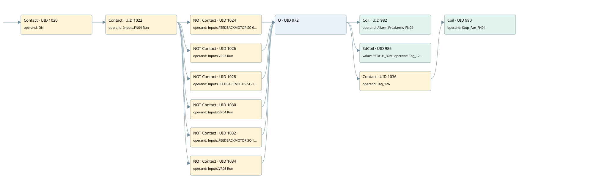

preallarm fn04
motors 1 · 검색 색인 순서 35 · 원본 내부 NID 추정 34
백업 PLF 원본의 2810738 바이트 위치에서 복원한 XML. 검색 문서 1964의 객체 키 16102200be11000000000000와 연결했다. 이름 해석 13/13개. 남은 RefId는 상수 또는 미해석 참조다.
연결 구조 다시 그리기
원본 Part/PCon/Wire를 이용한 연결도다. TIA 화면의 래더 배치 또는 실행 결과를 재현한 그림은 아니다. 핀 연결은 아래 표와 원본 XML을 기준으로 읽는다. 노드 위에 마우스를 두면 피연산자 이름을 볼 수 있다.

접점·코일·블록과 피연산자
| Part UID | Gate | Negated 핀 | 연결 피연산자 |
|---|---|---|---|
| 1020 | Contact | operand = ON | |
| 1022 | Contact | operand = Inputs.FN04 Run | |
| 1024 | Contact | operand | operand = Inputs.FEEDBACKMOTOR SC-01 |
| 1026 | Contact | operand | operand = Inputs.VR03 Run |
| 1028 | Contact | operand | operand = Inputs.FEEDBACKMOTOR SC-10 |
| 1030 | Contact | operand | operand = Inputs.VR04 Run |
| 1032 | Contact | operand | operand = Inputs.FEEDBACKMOTOR SC-11 |
| 1034 | Contact | operand | operand = Inputs.VR05 Run |
| 972 | O | ||
| 982 | Coil | operand = Allarm.Prealarms_FN04 | |
| 985 | SdCoil | value = S5T#1H_30M; operand = Tag_126 | |
| 1036 | Contact | operand = Tag_126 | |
| 990 | Coil | operand = Stop_Fan_FN04 |
접점 경로를 펼친 조건식
Contact·O/A·비교기의 원본 연결을 읽기 쉽게 펼친 보조 해석이다. POWER는 전원 레일 시작을 뜻한다. 호출 블록·에지·타이머의 내부 동작과 다중 쓰기 순서는 이 표로 실행 검증하지 않았다. 미해석 핀과 RefId는 원문 연결표에서 확인한다.
| UID | 동작 | 대상 | 원본 접점 경로 | 내용 |
|---|---|---|---|---|
| 982 | Coil | Allarm.Prealarms_FN04 | (((ON AND Inputs.FN04 Run) AND NOT [Inputs.FEEDBACKMOTOR SC-01]) OR ((ON AND Inputs.FN04 Run) AND NOT [Inputs.VR03 Run]) OR ((ON AND Inputs.FN04 Run) AND NOT [Inputs.FEEDBACKMOTOR SC-10]) OR ((ON AND Inputs.FN04 Run) AND NOT [Inputs.VR04 Run]) OR ((ON AND Inputs.FN04 Run) AND NOT [Inputs.FEEDBACKMOTOR SC-11]) OR ((ON AND Inputs.FN04 Run) AND NOT [Inputs.VR05 Run])) | 조건에 따른 Coil 기록 |
| 985 | SdCoil | Tag_126 | (((ON AND Inputs.FN04 Run) AND NOT [Inputs.FEEDBACKMOTOR SC-01]) OR ((ON AND Inputs.FN04 Run) AND NOT [Inputs.VR03 Run]) OR ((ON AND Inputs.FN04 Run) AND NOT [Inputs.FEEDBACKMOTOR SC-10]) OR ((ON AND Inputs.FN04 Run) AND NOT [Inputs.VR04 Run]) OR ((ON AND Inputs.FN04 Run) AND NOT [Inputs.FEEDBACKMOTOR SC-11]) OR ((ON AND Inputs.FN04 Run) AND NOT [Inputs.VR05 Run])) | 시간 동작 SdCoil; 타이머 의미 추가 확인 / 시간 인자 S5T#1H_30M |
| 990 | Coil | Stop_Fan_FN04 | ((((ON AND Inputs.FN04 Run) AND NOT [Inputs.FEEDBACKMOTOR SC-01]) OR ((ON AND Inputs.FN04 Run) AND NOT [Inputs.VR03 Run]) OR ((ON AND Inputs.FN04 Run) AND NOT [Inputs.FEEDBACKMOTOR SC-10]) OR ((ON AND Inputs.FN04 Run) AND NOT [Inputs.VR04 Run]) OR ((ON AND Inputs.FN04 Run) AND NOT [Inputs.FEEDBACKMOTOR SC-11]) OR ((ON AND Inputs.FN04 Run) AND NOT [Inputs.VR05 Run])) AND Tag_126) | 조건에 따른 Coil 기록 |
원본 배선 연결
| Wire UID | 동일 Wire 연결 끝점 |
|---|---|
| 1038 | Powerrail {} ↔ Part 1020.in |
| 1004 | ORef 991 (ON) ↔ Part 1020.operand |
| 1021 | Part 1020.out ↔ Part 1022.in |
| 1005 | ORef 992 (Inputs.FN04 Run) ↔ Part 1022.operand |
| 1023 | Part 1022.out ↔ Part 1024.in ↔ Part 1026.in ↔ Part 1028.in ↔ Part 1030.in ↔ Part 1032.in ↔ Part 1034.in |
| 1006 | ORef 993 (Inputs.FEEDBACKMOTOR SC-01) ↔ Part 1024.operand |
| 1025 | Part 1024.out ↔ Part 972.in1 |
| 1007 | ORef 994 (Inputs.VR03 Run) ↔ Part 1026.operand |
| 1027 | Part 1026.out ↔ Part 972.in2 |
| 1008 | ORef 995 (Inputs.FEEDBACKMOTOR SC-10) ↔ Part 1028.operand |
| 1029 | Part 1028.out ↔ Part 972.in3 |
| 1009 | ORef 996 (Inputs.VR04 Run) ↔ Part 1030.operand |
| 1031 | Part 1030.out ↔ Part 972.in4 |
| 1010 | ORef 997 (Inputs.FEEDBACKMOTOR SC-11) ↔ Part 1032.operand |
| 1033 | Part 1032.out ↔ Part 972.in5 |
| 1011 | ORef 998 (Inputs.VR05 Run) ↔ Part 1034.operand |
| 1035 | Part 1034.out ↔ Part 972.in6 |
| 1012 | Part 972.out ↔ Part 982.in ↔ Part 985.in ↔ Part 1036.in |
| 1013 | ORef 999 (Allarm.Prealarms_FN04) ↔ Part 982.operand |
| 1014 | ORef 1000 (S5T#1H_30M) ↔ Part 985.value |
| 1015 | ORef 1001 (Tag_126) ↔ Part 985.operand |
| 1016 | ORef 1002 (Tag_126) ↔ Part 1036.operand |
| 1037 | Part 1036.out ↔ Part 990.in |
| 1018 | ORef 1003 (Stop_Fan_FN04) ↔ Part 990.operand |
식별자 해석 근거 13개
| ORef UID | RefId | 이름 | IdentXmlPart 파일 | 해석 방법 |
|---|---|---|---|---|
| 991 | 1 | ON | 0602-IdentXmlPart.xml | UID/RID + search-text + NID agreement |
| 992 | 270 | Inputs.FN04 Run | 0604-IdentXmlPart.xml | UID/RID + search-text + NID agreement |
| 993 | 253 | Inputs.FEEDBACKMOTOR SC-01 | 0604-IdentXmlPart.xml | UID/RID + search-text + NID agreement |
| 994 | 219 | Inputs.VR03 Run | 0604-IdentXmlPart.xml | UID/RID + search-text + NID agreement |
| 995 | 254 | Inputs.FEEDBACKMOTOR SC-10 | 0604-IdentXmlPart.xml | UID/RID + search-text + NID agreement |
| 996 | 220 | Inputs.VR04 Run | 0604-IdentXmlPart.xml | UID/RID + search-text + NID agreement |
| 997 | 255 | Inputs.FEEDBACKMOTOR SC-11 | 0604-IdentXmlPart.xml | UID/RID + search-text + NID agreement |
| 998 | 221 | Inputs.VR05 Run | 0604-IdentXmlPart.xml | UID/RID + search-text + NID agreement |
| 999 | 168 | Allarm.Prealarms_FN04 | 0604-IdentXmlPart.xml | UID/RID + search-text + NID agreement |
| 1001 | 169 | Tag_126 | 0602-IdentXmlPart.xml | UID/RID + search-text + NID agreement |
| 1000 | 112 | S5T#1H_30M | 0606-IdentXmlPart.xml | literal candidate: UID/RID/NID + nearby named declarations + search-text agreement |
| 1002 | 169 | Tag_126 | 0602-IdentXmlPart.xml | UID/RID + search-text + NID agreement |
| 1003 | 170 | Stop_Fan_FN04 | 0605-IdentXmlPart.xml | UID/RID + search-text + NID agreement |
검색 코드 보조 자료
참조 명칭을 찾기 위한 자료이며 실행 순서나 AND/OR 관계는 위 연결표로 확인한다.
"on" "inputs"."fn04 run" "inputs"."feedbackmotor sc-01" "allarm".prealarms_fn04 "inputs"."vr03 run" "inputs"."feedbackmotor sc-10" "inputs"."vr04 run" "inputs"."feedbackmotor sc-11" "inputs"."vr05 run" "tag_126" s5t#1h_30m "tag_126" #stop_fan_fn04